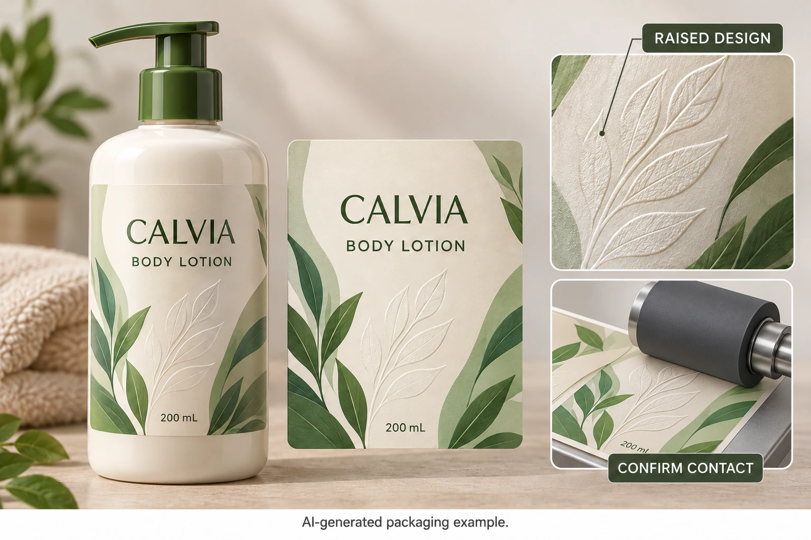

Ask which raised effect is actually proposed
The words raised label can refer to different decorative arrangements. Ask the supplier whether the proposal is an embossed substrate, a raised coating or another named process. Identify the construction and drawing or sample reference that represents it.
KURZ's decoration overview describes multiple finishing routes and related tooling. Its examples establish technology families, not an interchangeable supply or a confirmed capability for your cosmetic label order.
Keep the brand's objective specific. Is the relief meant to provide a tactile wordmark, a small decorative feature or a broader texture? A proposal should be judged against that purpose, not accepted merely because some part of a sample stands above the surface.
Map where the relief will sit
Mark the raised feature on the full-size label and on the intended bottle view. Identify its relationship to edges, curved areas, essential text and other decorative elements. Have the converter explain what the proposed construction requires around it.
Do not add a generic minimum margin or maximum relief height from this article. Those values need the actual supplier's supported design and production conditions. A stylized image cannot establish them.
Also identify which surface and layers the quoted thickness includes. The caliper guide covers layer and unit comparisons. A conventional flat-label caliper entry may not explain the full local profile of a raised feature; ask the supplier what its measurement represents.
Bring the receiving operation into the review
Tell the receiving team what changes from its familiar supply. Ask which relevant contact or handling areas should be reviewed for the actual application method. Do not assume that a decorative feature is irrelevant because it does not cross the printed label's edge.
For machine application, let the operator and equipment supplier define any trial and appropriate setup. This guide does not prescribe roller pressure, speed or adjustment. For hand application, ask whether the proposed presentation lets the packer place and smooth the label under the agreed method without an unsupported workaround.
The roll handoff guide remains the source of the surrounding delivery questions. Keep the exact raised construction attached to that specification rather than supplying the standard flat-label record from another job.
Compare the flat reference with the applied construction
A flat decorative sample can help the brand understand the proposed effect. An applied sample adds the bottle's geometry and the intended placement. Neither should be described as more comprehensive than the review actually performed.
Ask who prepared the sample and which parts represent production. If only the appearance model is available, record the unresolved handling and material questions. Do not treat a convincing visual model as approval to run an unreviewed construction on a filling line.
| Record | Input to identify | Decision supported |
|---|---|---|
| Effect | Named process and sample reference | What is the supplier actually proposing? |
| Relief map | Raised area on the actual-size design | Where does the profile change? |
| Construction | Face, adhesive, liner, finish and profile scope | What supply must the operation handle? |
| Contact review | Actual application method and relevant contact areas | Which compatibility question needs evaluation? |
| Sample scope | Flat, appearance model or representative applied sample | What has and has not been demonstrated? |
| Brand acceptance | Visual and tactile reference | Does the effect meet the objective? |
| Operating acceptance | Named reviewer and remaining condition | Can the receiving route proceed? |
Complete effect and construction identity first. Get the receiving team's review requirements, obtain the relevant sample and record the visual and operating decisions separately. Hold the unresolved part if the evidence does not represent the actual construction.

A simpler feature can be the better purchase
A hypothetical small tactile brand mark may provide the intended distinction with a manageable review scope. A broad relief pattern extending through relevant handling areas can require more construction and application work. The appropriate choice depends on the actual design objective and supported production proposal.
If an ordinary printed motif already meets the brief, keeping it flat can be sensible. If the tactile feature is central to the pack, obtain the evidence needed to evaluate it rather than assuming it is automatically impossible. Let both options have a fair chance in the quotation.
For a cosmetic label inquiry, provide the bottle, artwork, marked raised areas, dimensions, quantity per design and application method. Ask which processes are currently available and what sample is needed. Use the form to prepare a message; send references by email or WhatsApp. Approve the effect and the route that must handle it.